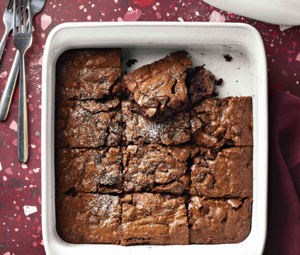

Fudge Brownies

Description
These deliciously gooey fudge brownies are to die for! So easy to make and will certainly put a smile on your face!
Yields 24 servings. Approximately 50 minute total time (15 min prep, 35 min cook)
Ingredients
- 3 cups white sugar
- 1 cup melted butter
- 1 tablespoon vanilla extract
- 4 eggs
- 1 1/2 cups all-purpose flour
- 1 cup unsweetened cocoa powder
- 1 teaspoon salt
- 1 cup semisweet chocolate chips
Directions
- Preheat oven to 350 degrees F (175 degrees C) and lightly grease 9x13-inch baking dish
- Combine sugar, melted butter, and vanilla extract in large mixing bowl
- Beat in eggs one at a time until thourougly mixed
- Sift flour, cocoa powder, and salt into a separate large bowl. Add flour mixture to egg mixture in thirds until fully blended. stir in chocolate chips
- Transfer batter to greased baking dish. Bake for 35-40 minutes until top is dry and edges have started to pull away from sides of pan
- Allow brownies to cool before slicing into 24 squares